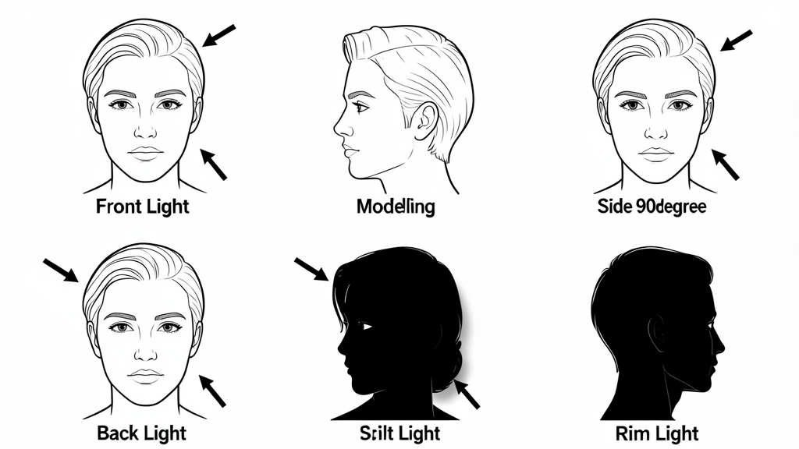

Phase 4: Color & Light✍️ Creative (MiniMax/Qwen)100 XP
Objective
Read light like a pro. Front, side, back, top — each direction creates a completely different mood. The sun is your free studio.
☀️
Front Light
Light behind camera → subject lit evenly
🌤️
Side Light
Light at 45-90° → depth, texture, drama
🌅
Back Light
Light behind subject → rim, silhouette, glow
🌞
Top Light
Noon sun/overhead → harsh shadows under eyes
🌅
Rim/Hair Light
Back + slightly above → separates subject
🪞
Reflected Light
Wall/water/sand bouncing → soft fill

6 lighting directions and their effects on a subject
What Each Direction Does
Front: Flat, even, "safe" — minimal shadows, shows all detail, least dramatic
Side (45°): The sweet spot — one side lit, one shadowed → 3D shape, texture revealed
Side (90°): Split lighting — half face lit, half shadow → dramatic, mysterious
Back: Subject dark, rim of light around edges → silhouette or halo
Top: "Raccoon eyes" — shadows under eyes, nose, chin. Avoid for portraits.
Bottom: "Horror lighting" — unnatural, spooky, creative only
Golden Hour & Blue Hour — Magic Hours
Golden Hour: 1hr after sunrise / 1hr before sunset. Warm, soft, directional. Best light ever.
Blue Hour: 30min after sunset / before sunrise. Deep blue sky, city lights on. Cool, moody.
Midday: Harsh, top-down. Use shade, diffuser, or flash.
Reading Light — The Photographer's Superpower
Look at shadows: hard edge = hard light, soft edge = soft light
Look at catchlights in eyes: reveals light source position/size
Squint! Squinting reduces dynamic range → you see light/shadow pattern clearly
Walk around subject: watch how light changes on face
Golden Hour Challenge — The "Turn Around" Test
During golden hour, put subject in same spot. Shoot: front lit, side lit, back lit, rim lit. Same spot, 4 completely different looks. The light does the work, you just move.
🎯 Challenge
Front, side, back, top, rim, reflected. Same subject, same spot, 6 different light directions. Use reflector (white poster board) for fill on back-lit. Compare: mood, dimension, story.